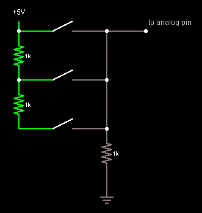
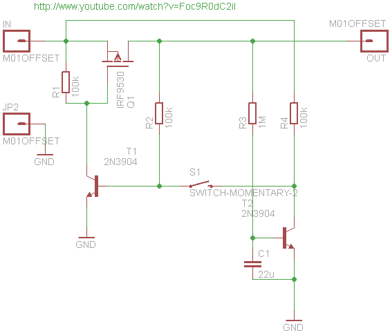

Various notes about buttons, switches, etc...
Buttons 101
- Debouncing : you have to debounce buttons. The spring inside will bump many times, or just even the time you press while scanned thousands of time per second by your program will read multiple inputs. Usually just read every n millisec is enough.
- Floating : if a pin is not connected to anything because switch is opened, the input is floating and picking whatever magnetic perturabations arround. You have to do a pull-up or pull-down.
Multiple buttons on 1 analog pin

This is one of the multiple possible circuit. This one is pulled-down, can read without ambiguity maybe until 5 buttons, but can't read multiple press at the same time.
Receipe for n buttons:
- n resistors of value R (R <= 1 kOhm)
- n momentary buttons
The "R
bottom" (on the graph) one is a pull down.
For n == 3:
Button pressed
|
Reading
|
Comment
|
None
|
0 V
|
Pulldown
|
Top
|
Vcc
|
Because direclt linked to 5v, but the bottom resistor limits the current to a very low value
|
Middle
|
Vcc /2
|
V = Vcc * Rbottom / (Rtop %20 Rbottom) = Vcc * R / 2R = Vcc/2
|
Bottom
|
Vcc /3
|
V = Vcc * Rbottom / (Rtop %20 Rmiddle %20 Rbottom) = Vcc * R / 3R = Vcc/3
|
One can find an interresting variant here :
http://rayshobby.net/blog/?p=16
Push-on push-off latching switch
Turn on/off with one push button only !

EEVblog Dave crazy bloke's version http://www.youtube.com/watch?v=Foc9R0dC2iI